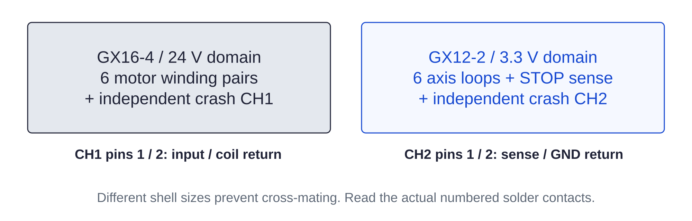

Controller / harness117 / 179
Separate motor power from logic plugs
Two connector sizes keep the 24 V crash-coil circuit physically separate from the GPIO sense circuit. Meter numbered contacts in both mating views.
Add7 GX16-4 matched pairs · 8 GX12-2 matched pairs · axis / STOP / CH1 / CH2 labels
Tools / setupAll power unplugged · continuity meter · strain relief

| Labeled pair | Contact allocation |
|---|---|
| 6 motor GX16-4 | 1 A1 · 2 A2 · 3 B1 · 4 B2 |
| Crash CH1 GX16-4 | 1 coil-chain input · 2 return to COIL+ · 3/4 unused |
| 6 axis GX12-2 | 1 GPIO input · 2 GND return; four contacts in series |
| STOP sense GX12-2 | 1 GP26 route · 2 through STOP NC2 toward CH2 |
| Crash CH2 GX12-2 | 1 from STOP NC2 · 2 GND return |
Ready when
CH1 has no GND pole, unused contacts stay isolated and no 24 V connector can mate with a GPIO loop. Both ends meter to their recorded numbered contacts. A reversed solder view, crossed pair or logic/power cross-mating defeats isolation. Correct the complete unplugged pair and meter it before use.